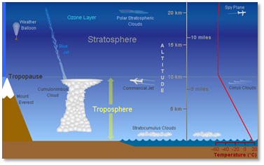
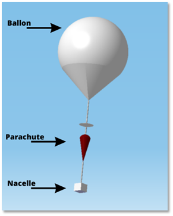

Un ballon sonde ou « ballon météorologique » est un outil permettant de faire des mesures utiles dans le domaine de la météorologie en s’élevant dans le ciel. L'utilisation des ballons sondes est importante pour les prévisions météorologiques, car les données collectées par les ballons peuvent aider les météorologues à prédire les conditions météorologiques à court et à long terme. Les ballons sondes sont également utilisés pour étudier l'atmosphère supérieure, y compris la stratosphère et la mésosphère, ainsi que pour la recherche scientifique sur la composition de l'atmosphère et les changements climatiques. Toutes les stations météorologiques à travers le monde envoient deux ballons par jour à 0 et 12 heures UTC (Temps universel).
Il existe plusieurs types de ballons-sondes. Par exemple, les ballons-sondes stratosphériques sont conçus pour voler à des altitudes élevées dans la stratosphère. Les ballons-sondes à gaz chaud, quant à eux, sont remplis d'air chaud et sont généralement utilisés pour des projets artistiques ou pour effectuer des expériences dans la haute atmosphère. Le ballon-sonde que nous allons lancer appartient à la catégorie des ballons-sondes météorologiques. Ce type de ballon peut mesurer la pression, la température, l'humidité et la vitesse du vent de l'atmosphère. Il peut également transporter des charges légères et monter jusqu'à une altitude de 35 kilomètres grâce à son ballon composé de latex et gonflé à l'hélium. Ce plafond de 35 km est dû à la pression atmosphérique qui diminue avec l'altitude. En effet, au-delà, la force exercée sur la surface du ballon diminue, ce qui entraîne l'expansion du ballon jusqu'à sa rupture.
Durant son vol, un ballon sonde peut atteindre jusqu’à 40 km d’altitude ! Il doit alors être préparé à affronter toutes les variations météorologiques dans les différentes couches de l’atmosphère, commençons donc par introduire ces dernières.
La première couche de l’atmosphère est la troposphère, c'est la couche la plus basse de l'atmosphère, s'étendant jusqu'à environ 12 km d'altitude à l'équateur et à environ 8 km aux pôles, du fait de la forme légèrement aplatie de la Terre. C'est également la couche la plus dense et la plus épaisse, où la plupart des évènements météorologiques se produisent comme la pluie ou les orages. La température diminue avec l'altitude dans cette couche.
La stratosphère : Au-dessus de la troposphère se trouve la stratosphère, s'étendant jusqu'à environ 50 km d'altitude. Dans cette couche, la température augmente avec l'altitude en raison de la présence de la couche d'ozone. Cette couche contient également des vents forts et constants appelés jet stream.
Ainsi un ballon sonde et ses composants doit être capable d’évoluer entre 20 °C et -50 °C pour la température et pour la pression entre 1013 hPa et 6 hPa tout en résistant aux vents et formations de givre. Pour en apprendre plus sur l’atmosphère, cliquez ici.
Les ballons sondes sont généralement composés de plusieurs parties : le ballon lui-même, le parachute, le capteur météorologique et la nacelle.
Le ballon est généralement rempli d'hélium ou d'hydrogène pour lui permettre de s’élever du sol grâce à la flottabilité. La flottabilité est la capacité du ballon à s’élever dans les airs en raison de la différence de densité entre l’air à l’intérieur du ballon et l’air environnant. Cette différence de densité entraîne une force de flottabilité dirigée vers le haut qui permet au ballon de s’élever dans l’atmosphère. Mathématiquement, cette force de flottaison est appelé « principe d’Archimède ». Dans cette équation, la force de flottaison exercée sur le ballon (\(F_B)\) est égale au poids de l’air qu’il déplace (\(w_{air déplacé}\)). On a ainsi : $$F_B=w_{air déplacé}$$
Le parachute est utilisé pour ralentir la descente du ballon et de la nacelle après la fin de la mission. Le parachute doit être fabriqué selon les normes de la DGAC et il doit permettre au ballon sonde de retomber à une vitesse inférieure à 5 m/s. C’est pour cela qu’en générale le parachute est fourni par l’entité qui aide ou s’occupe du lancement.
La nacelle est la structure qui contient les instruments météorologiques, qui sont généralement des capteurs électroniques qui mesurent des conditions telles que la pression, la température, l'humidité et la vitesse du vent.
L’ascension du ballon sonde débute avec le remplissage du ballon par de l’hélium. Une fois que la quantité nécessaire pour le faire décoller du sol est présente dans le ballon, il s’envole pour plusieurs heures grâce à la poussée d’Archimède. Ce phénomène s’explique simplement : “Tout corps plongé dans un fluide subit une poussée verticale vers le haut égale au poids du volume de fluide déplacé”. Ainsi l’hélium avec lequel le ballon est gonflé étant moins dense que l’air, son poids est moindre que celui de l’air, créant l’ascension du ballon. Tout au long de l’ascension, la pression de l’air va diminuer plus l’altitude augmente, de ce fait, l’hélium présent dans le ballon va occuper de plus en plus de place et faire gonfler ce dernier. C’est justement cela qui fixera l’altitude limite du ballon, là où la pression dans le ballon est bien plus élevée qu’à l’extérieur et où le ballon explose alors. Le ballon sonde étant assez léger dans l’ensemble, il y a un l’élément à ne pas négliger : le vent. Il est donc essentiel de regarder la météo des vents pour le jour du lancement pour ne pas se faire surprendre. Il est possible de déterminer à l’avance la trajectoire du ballon et le temps d’ascension ce qui facilitera grandement la récupération de la nacelle. Certains ballons sont capables d’atteindre des altitudes de presque trente kilomètres, a une telle altitude, le ballon est déjà éloigné de plusieurs kilomètres de son point de départ.
En ce qui concerne notre ballon sonde prévu pour 2024, la question de l’ascension du ballon et plus précisément sa trajectoire est primordiale. C’est pourquoi l’équipe trajectoire de notre projet a réalisé un code de calcul permettant de faire des simulations de vol notamment pour l’ascension d’un ballon sonde.